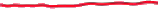
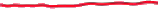
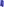
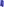

In this segment we develop some consequences of the independence assumption that we have made on the trials that constitute a Bernoulli process. These properties will be pretty intuitive, but they play an important role. They're helpful in solving problems, and they're also quite helpful in understanding the continuous time version of the Bernoulli process, namely the Poisson process that we will be studying later. So here's the story.

objects 0 - 1
line badness[0][1] = 0
t penalty = -0.0
x penalty = -12.0
y penalty = -0.0
objects 2 - 3
line badness[2][3] = 0
t penalty = -0.0
x penalty = -14.0
y penalty = -0.0
objects 4 - 5
line badness[4][5] = 0
t penalty = -0.0
x penalty = -12.0
y penalty = -0.0
We start with a Bernoulli processes with some parameter p.
objects 6 - 8
line badness[6][8] = 0
t penalty = -0.0
x penalty = -490.0
y penalty = -0.0
objects 9 - 10
line badness[9][10] = 0
t penalty = -0.0
x penalty = -3.0
y penalty = -0.0
objects 11 - 12
line badness[11][12] = 0
t penalty = -275.0
x penalty = -206.0
y penalty = -275.0
objects 13 - 15
line badness[13][15] = 0
t penalty = -0.0
x penalty = -1.0
y penalty = -0.0
The process starts.
 

objects 16 - 17
line badness[16][17] = 0
t penalty = -0.0
x penalty = -1.0
y penalty = -0.0
objects 18 - 19
line badness[18][19] = 0
t penalty = -15.0
x penalty = -161.0
y penalty = -15.0
objects 20 - 21
line badness[20][21] = 0
t penalty = -20.0
x penalty = -17.0
y penalty = -20.0
objects 22 - 23
line badness[22][23] = 0
t penalty = -0.0
x penalty = -16.0
y penalty = -0.0
objects 24 - 26
line badness[24][26] = 0
t penalty = -0.0
x penalty = -33.0
y penalty = -0.0
objects 27 - 29
line badness[27][29] = 0
t penalty = -0.0
x penalty = -30.0
y penalty = -0.0
objects 30 - 31
line badness[30][31] = 0
t penalty = -200.0
x penalty = -5.0
y penalty = -200.0
A friend of yours watches the processes, and they observe the results of the different trials, let's say for five time steps.
objects 32 - 33
line badness[32][33] = 0
t penalty = -5.0
x penalty = -3.0
y penalty = -5.0
objects 34 - 35
line badness[34][35] = 0
t penalty = -0.0
x penalty = -3.0
y penalty = -0.0

 

objects 36 - 37
line badness[36][37] = 0
t penalty = -0.0
x penalty = -9.0
y penalty = -0.0
objects 38 - 40
line badness[38][40] = 0
t penalty = -5.0
x penalty = -3.0
y penalty = -5.0
objects 41 - 43
line badness[41][43] = 0
t penalty = -10.0
x penalty = -121.0
y penalty = -10.0
objects 44 - 46
line badness[44][46] = 0
t penalty = -0.0
x penalty = -1.0
y penalty = -0.0
objects 47 - 49
line badness[47][49] = 0
t penalty = -70.0
x penalty = -44.0
y penalty = -70.0
objects 50 - 51
line badness[50][51] = 0
t penalty = -0.0
x penalty = -10.0
y penalty = -0.0
objects 52 - 53
line badness[52][53] = 0
t penalty = -180.0
x penalty = -79.0
y penalty = -180.0
objects 54 - 55
line badness[54][55] = 0
t penalty = -20.0
x penalty = -24.0
y penalty = -20.0
objects 56 - 57
line badness[56][57] = 0
t penalty = -0.0
x penalty = -9.0
y penalty = -0.0
objects 58 - 60
line badness[58][60] = 0
t penalty = -0.0
x penalty = -51.0
y penalty = -0.0
And at this time, right after time five, they call you into the room, and you start watching the rest of the process.
objects 61 - 63
line badness[61][63] = 0
t penalty = -255.0
x penalty = -61.0
y penalty = -255.0
objects 64 - 65
line badness[64][65] = 0
t penalty = -0.0
x penalty = -11.0
y penalty = -0.0

objects 66 - 67
line badness[66][67] = 0
t penalty = -240.0
x penalty = -224.0
y penalty = -240.0
objects 68 - 69
line badness[68][69] = 0
t penalty = -0.0
x penalty = -15.0
y penalty = -0.0
objects 70 - 71
line badness[70][71] = 0
t penalty = -0.0
x penalty = -20.0
y penalty = -0.0
What will you see? The first random variable that you will see is the result of whatever happens in this time slot, which is the sixth slot of the original process.
objects 72 - 73
line badness[72][73] = 0
t penalty = -220.0
x penalty = -262.0
y penalty = -220.0

objects 74 - 75
line badness[74][75] = 0
t penalty = -15.0
x penalty = -138.0
y penalty = -15.0
objects 76 - 77
line badness[76][77] = 0
t penalty = -5.0
x penalty = -3.0
y penalty = -5.0
objects 78 - 79
line badness[78][79] = 0
t penalty = -15.0
x penalty = -23.0
y penalty = -15.0
objects 80 - 81
line badness[80][81] = 0
t penalty = -65.0
x penalty = -20.0
y penalty = -65.0
objects 82 - 84
line badness[82][84] = 0
t penalty = -0.0
x penalty = -22.0
y penalty = -0.0
objects 85 - 87
line badness[85][87] = 0
t penalty = -0.0
x penalty = -11.0
y penalty = -0.0
objects 88 - 89
line badness[88][89] = 0
t penalty = -95.0
x penalty = -67.0
y penalty = -95.0


objects 90 - 91
line badness[90][91] = 0
t penalty = -0.0
x penalty = -1.0
y penalty = -0.0
objects 92 - 93
line badness[92][93] = 0
t penalty = -500.0
x penalty = -162.0
y penalty = -500.0
The second random variable that you will see is the result of the seventh random variable in the original process, and so on.
objects 94 - 95
line badness[94][95] = 0
t penalty = -0.0
x penalty = -15.0
y penalty = -0.0
objects 96 - 98
line badness[96][98] = 0
t penalty = -450.0
x penalty = -188.0
y penalty = -450.0
objects 99 - 101
line badness[99][101] = 0
t penalty = -155.0
x penalty = -27.0
y penalty = -155.0
objects 102 - 103
line badness[102][103] = 0
t penalty = -120.0
x penalty = -95.0
y penalty = -120.0
objects 104 - 105
line badness[104][105] = 0
t penalty = -20.0
x penalty = -10.0
y penalty = -20.0
objects 106 - 108
line badness[106][108] = 0
t penalty = -40.0
x penalty = -14.0
y penalty = -40.0
objects 109 - 110
line badness[109][110] = 0
t penalty = -0.0
x penalty = -11.0
y penalty = -0.0

objects 111 - 112
line badness[111][112] = 0
t penalty = -0.0
x penalty = -5.0
y penalty = -0.0
So the process that you get to see is the process Yi, where i ranges over the non-negative integers.
objects 113 - 114
line badness[113][114] = 0
t penalty = -235.0
x penalty = -35.0
y penalty = -235.0
objects 115 - 116
line badness[115][116] = 0
t penalty = -450.0
x penalty = -638.0
y penalty = -450.0
What properties does this process have? Because of the assumption that the different trials are independent, this means that the first five trials are independent from the trials that happen after time five.

objects 117 - 119
line badness[117][119] = 0
t penalty = -470.0
x penalty = -324.0
y penalty = -470.0
objects 120 - 121
line badness[120][121] = 0
t penalty = -0.0
x penalty = -24.0
y penalty = -0.0
objects 122 - 123
line badness[122][123] = 0
t penalty = -0.0
x penalty = -15.0
y penalty = -0.0
objects 124 - 125
line badness[124][125] = 0
t penalty = -0.0
x penalty = -36.0
y penalty = -0.0
objects 126 - 128
line badness[126][128] = 0
t penalty = -0.0
x penalty = -9.0
y penalty = -0.0
objects 129 - 130
line badness[129][130] = 0
t penalty = -0.0
x penalty = -8.0
y penalty = -0.0
objects 131 - 132
line badness[131][132] = 0
t penalty = -0.0
x penalty = -6.0
y penalty = -0.0
objects 133 - 135
line badness[133][135] = 0
t penalty = -185.0
x penalty = -310.0
y penalty = -185.0
objects 136 - 137
line badness[136][137] = 0
t penalty = -0.0
x penalty = -9.0
y penalty = -0.0
objects 138 - 139
line badness[138][139] = 0
t penalty = -0.0
x penalty = -16.0
y penalty = -0.0
objects 140 - 142
line badness[140][142] = 0
t penalty = -0.0
x penalty = -12.0
y penalty = -0.0
objects 143 - 144
line badness[143][144] = 0
t penalty = -0.0
x penalty = -15.0
y penalty = -0.0
objects 145 - 146
line badness[145][146] = 0
t penalty = -95.0
x penalty = -21.0
y penalty = -95.0
objects 147 - 148
line badness[147][148] = 0
t penalty = -0.0
x penalty = -16.0
y penalty = -0.0
So one property is that the process is Yi is independent of whatever happens in the past, which is X1 up to X5.
objects 149 - 150
line badness[149][150] = 0
t penalty = -0.0
x penalty = -12.0
y penalty = -0.0
objects 151 - 152
line badness[151][152] = 0
t penalty = -5.0
x penalty = -891.0
y penalty = -5.0
objects 153 - 154
line badness[153][154] = 0
t penalty = -220.0
x penalty = -472.0
y penalty = -220.0
Second, the random variable that you see, X6, X7, and so on, are independent Bernoulli random variables with parameter p.
objects 155 - 156
line badness[155][156] = 0
t penalty = -65.0
x penalty = -5.0
y penalty = -65.0
objects 157 - 159
line badness[157][159] = 0
t penalty = -0.0
x penalty = -29.0
y penalty = -0.0
objects 160 - 161
line badness[160][161] = 0
t penalty = -5.0
x penalty = -11.0
y penalty = -5.0
So the random variables Yi constitute also a Bernoulli process with parameter p.
objects 162 - 163
line badness[162][163] = 0
t penalty = -0.0
x penalty = -0.0
y penalty = -0.0
objects 164 - 165
line badness[164][165] = 0
t penalty = -45.0
x penalty = -17.0
y penalty = -45.0
objects 166 - 167
line badness[166][167] = 0
t penalty = -5.0
x penalty = -16.0
y penalty = -5.0
objects 168 - 170
line badness[168][170] = 0
t penalty = -200.0
x penalty = -902.0
y penalty = -200.0
So the process that you get to see, which is the sequence of trials after time five, is identical, probabilistically, to a Bernoulli process with parameter p like the process Xi. So it's as if a Bernoulli process was just starting fresh at this particular time. And because of this, we say that the process has a fresh-start property after a certain time.
objects 171 - 172
line badness[171][172] = 0
t penalty = -0.0
x penalty = -1.0
y penalty = -0.0
objects 173 - 174
line badness[173][174] = 0
t penalty = -45.0
x penalty = -34.0
y penalty = -45.0
objects 175 - 176
line badness[175][176] = 0
t penalty = -5.0
x penalty = -6.0
y penalty = -5.0
objects 177 - 178
line badness[177][178] = 0
t penalty = -0.0
x penalty = -4.0
y penalty = -0.0
objects 179 - 181
line badness[179][181] = 0
t penalty = -785.0
x penalty = -395.0
y penalty = -785.0
objects 182 - 183
line badness[182][183] = 0
t penalty = -0.0
x penalty = -12.0
y penalty = -0.0
objects 184 - 185
line badness[184][185] = 0
t penalty = -5.0
x penalty = -1.0
y penalty = -5.0
objects 186 - 187
line badness[186][187] = 0
t penalty = -0.0
x penalty = -6.0
y penalty = -0.0

objects 188 - 190
line badness[188][190] = 0
t penalty = -265.0
x penalty = -52.0
y penalty = -265.0
objects 191 - 192
line badness[191][192] = 0
t penalty = -0.0
x penalty = -11.0
y penalty = -0.0
objects 193 - 194
line badness[193][194] = 0
t penalty = -0.0
x penalty = -4.0
y penalty = -0.0
objects 195 - 196
line badness[195][196] = 0
t penalty = -0.0
x penalty = -6.0
y penalty = -0.0
objects 197 - 198
line badness[197][198] = 0
t penalty = -125.0
x penalty = -508.0
y penalty = -125.0
In this example, we used 5 as the certain time, but instead of 5, we could have any particular integer little n, in which case our process Y1 starts with Xn plus 1, continues with Xn plus 2 and so on.
objects 199 - 200
line badness[199][200] = 0
t penalty = -0.0
x penalty = -10.0
y penalty = -0.0
objects 201 - 202
line badness[201][202] = 0
t penalty = -0.0
x penalty = -15.0
y penalty = -0.0
And here, instead of X5, we would have written Xn.

objects 203 - 204
line badness[203][204] = 0
t penalty = -50.0
x penalty = -975.0
y penalty = -50.0
So after a deterministic time n, what you see is the same as if we had a Bernoulli process that was starting fresh at this particular time, and which is also independent from whatever happened in the past.
objects 205 - 206
line badness[205][206] = 0
t penalty = -15.0
x penalty = -1.0
y penalty = -15.0
Let us now complicate the story a little bit.
objects 207 - 208
line badness[207][208] = 0
t penalty = -0.0
x penalty = -3.0
y penalty = -0.0
objects 209 - 211
line badness[209][211] = 0
t penalty = -0.0
x penalty = -245.0
y penalty = -0.0
objects 212 - 213
line badness[212][213] = 0
t penalty = -0.0
x penalty = -3.0
y penalty = -0.0
objects 214 - 215
line badness[214][215] = 0
t penalty = -100.0
x penalty = -21.0
y penalty = -100.0
objects 216 - 217
line badness[216][217] = 0
t penalty = -0.0
x penalty = -22.0
y penalty = -0.0
objects 218 - 219
line badness[218][219] = 0
t penalty = -35.0
x penalty = -16.0
y penalty = -35.0
objects 220 - 221
line badness[220][221] = 0
t penalty = -30.0
x penalty = -38.0
y penalty = -30.0
objects 222 - 223
line badness[222][223] = 0
t penalty = -0.0
x penalty = -25.0
y penalty = -0.0
objects 224 - 225
line badness[224][225] = 0
t penalty = -40.0
x penalty = -2.0
y penalty = -40.0
objects 226 - 227
line badness[226][227] = 0
t penalty = -245.0
x penalty = -8.0
y penalty = -245.0
Suppose that your friend watches the Bernoulli process, and they keep watching it until a success is observed for the first time.
objects 228 - 229
line badness[228][229] = 0
t penalty = -10.0
x penalty = -10.0
y penalty = -10.0
objects 230 - 231
line badness[230][231] = 0
t penalty = -5.0
x penalty = -7.0
y penalty = -5.0

objects 232 - 233
line badness[232][233] = 0
t penalty = -0.0
x penalty = -10.0
y penalty = -0.0

objects 234 - 236
line badness[234][236] = 0
t penalty = -135.0
x penalty = -28.0
y penalty = -135.0
objects 237 - 239
line badness[237][239] = 0
t penalty = -0.0
x penalty = -37.0
y penalty = -0.0
objects 240 - 242
line badness[240][242] = 0
t penalty = -0.0
x penalty = -72.0
y penalty = -0.0
Right at that time, they call you into the room, and you started watching the rest of the process.
objects 243 - 245
line badness[243][245] = 0
t penalty = -175.0
x penalty = -304.0
y penalty = -175.0
objects 246 - 247
line badness[246][247] = 0
t penalty = -0.0
x penalty = -13.0
y penalty = -0.0
objects 248 - 250
line badness[248][250] = 0
t penalty = -410.0
x penalty = -342.0
y penalty = -410.0
This is the length of time that we have called T1, the number of trials until the first success.
objects 251 - 252
line badness[251][252] = 0
t penalty = -40.0
x penalty = -8.0
y penalty = -40.0
objects 253 - 254
line badness[253][254] = 0
t penalty = -5.0
x penalty = -1.0
y penalty = -5.0
objects 255 - 256
line badness[255][256] = 0
t penalty = -5.0
x penalty = -23.0
y penalty = -5.0
objects 257 - 258
line badness[257][258] = 0
t penalty = -0.0
x penalty = -10.0
y penalty = -0.0
objects 259 - 260
line badness[259][260] = 0
t penalty = -0.0
x penalty = -2.0
y penalty = -0.0

objects 261 - 262
line badness[261][262] = 0
t penalty = -5.0
x penalty = -11.0
y penalty = -5.0
objects 263 - 264
line badness[263][264] = 0
t penalty = -0.0
x penalty = -6.0
y penalty = -0.0
So what is it that you will be watching? The first random variable that you will see is what happens in slot T1 plus 1.

objects 265 - 266
line badness[265][266] = 0
t penalty = -180.0
x penalty = -167.0
y penalty = -180.0
objects 267 - 268
line badness[267][268] = 0
t penalty = -0.0
x penalty = -16.0
y penalty = -0.0
objects 269 - 270
line badness[269][270] = 0
t penalty = -10.0
x penalty = -15.0
y penalty = -10.0
objects 271 - 272
line badness[271][272] = 0
t penalty = -25.0
x penalty = -8.0
y penalty = -25.0

objects 273 - 274
line badness[273][274] = 0
t penalty = -0.0
x penalty = -17.0
y penalty = -0.0

objects 275 - 276
line badness[275][276] = 0
t penalty = -5.0
x penalty = -11.0
y penalty = -5.0
objects 277 - 278
line badness[277][278] = 0
t penalty = -0.0
x penalty = -8.0
y penalty = -0.0
objects 279 - 280
line badness[279][280] = 0
t penalty = -0.0
x penalty = -2.0
y penalty = -0.0
objects 281 - 282
line badness[281][282] = 0
t penalty = -0.0
x penalty = -13.0
y penalty = -0.0
objects 283 - 284
line badness[283][284] = 0
t penalty = -55.0
x penalty = -15.0
y penalty = -55.0
objects 285 - 287
line badness[285][287] = 0
t penalty = -80.0
x penalty = -124.0
y penalty = -80.0
objects 288 - 290
line badness[288][290] = 0
t penalty = -45.0
x penalty = -8.0
y penalty = -45.0
The second random variable that you will see is what happened in slot T1 plus 2, and so on.
objects 291 - 292
line badness[291][292] = 0
t penalty = -400.0
x penalty = -53.0
y penalty = -400.0
objects 293 - 295
line badness[293][295] = 0
t penalty = -110.0
x penalty = -3.0
y penalty = -110.0
And this defines, again, a process, the sequence of the Yi's This is what you will see starting from this particular time. What kind of process is it? Well, these trials happened in the past. We know what they were.
objects 296 - 297
line badness[296][297] = 0
t penalty = -110.0
x penalty = -319.0
y penalty = -110.0
But no matter what they were, the future trials will still be independent of the past, and each one of the trials will have probability p of being a success.
objects 298 - 300
line badness[298][300] = 0
t penalty = -0.0
x penalty = -14.0
y penalty = -0.0
objects 301 - 302
line badness[301][302] = 0
t penalty = -0.0
x penalty = -21.0
y penalty = -0.0
objects 303 - 304
line badness[303][304] = 0
t penalty = -20.0
x penalty = -8.0
y penalty = -20.0
objects 305 - 307
line badness[305][307] = 0
t penalty = -60.0
x penalty = -5.0
y penalty = -60.0
objects 308 - 309
line badness[308][309] = 0
t penalty = -0.0
x penalty = -34.0
y penalty = -0.0
objects 310 - 311
line badness[310][311] = 0
t penalty = -10.0
x penalty = -11.0
y penalty = -10.0
objects 312 - 314
line badness[312][314] = 0
t penalty = -0.0
x penalty = -8.0
y penalty = -0.0
objects 315 - 316
line badness[315][316] = 0
t penalty = -240.0
x penalty = -338.0
y penalty = -240.0
objects 317 - 318
line badness[317][318] = 0
t penalty = -0.0
x penalty = -39.0
y penalty = -0.0
objects 319 - 320
line badness[319][320] = 0
t penalty = -0.0
x penalty = -19.0
y penalty = -0.0
objects 321 - 322
line badness[321][322] = 0
t penalty = -0.0
x penalty = -5.0
y penalty = -0.0
objects 323 - 324
line badness[323][324] = 0
t penalty = -0.0
x penalty = -14.0
y penalty = -0.0
objects 325 - 326
line badness[325][326] = 0
t penalty = -0.0
x penalty = -9.0
y penalty = -0.0
objects 327 - 328
line badness[327][328] = 0
t penalty = -5.0
x penalty = -14.0
y penalty = -5.0
objects 329 - 330
line badness[329][330] = 0
t penalty = -200.0
x penalty = -329.0
y penalty = -200.0
So the properties that we have, again, is that the trials that you see are independent of the past, which in this case is everything from x1 up to time xT1.
objects 331 - 332
line badness[331][332] = 0
t penalty = -0.0
x penalty = -15.0
y penalty = -0.0
objects 333 - 335
line badness[333][335] = 0
t penalty = -95.0
x penalty = -14.0
y penalty = -95.0
objects 336 - 338
line badness[336][338] = 0
t penalty = -0.0
x penalty = -54.0
y penalty = -0.0
objects 339 - 341
line badness[339][341] = 0
t penalty = -0.0
x penalty = -29.0
y penalty = -0.0
And what you see is a Bernoulli process.

objects 342 - 343
line badness[342][343] = 0
t penalty = -0.0
x penalty = -15.0
y penalty = -0.0
objects 344 - 346
line badness[344][346] = 0
t penalty = -0.0
x penalty = -10.0
y penalty = -0.0
objects 347 - 348
line badness[347][348] = 0
t penalty = -220.0
x penalty = -883.0
y penalty = -220.0
We describe the situation by saying that the process starts fresh after time T1.

objects 349 - 350
line badness[349][350] = 0
t penalty = -40.0
x penalty = -158.0
y penalty = -40.0
And by this, again, we mean that if you start watching the process right after T1, what you will see will be a Bernoulli process which is independent from whatever happened in the past.

objects 351 - 352
line badness[351][352] = 0
t penalty = -1790.0
x penalty = -235.0
y penalty = -1790.0
Having just argued that the process starts of the first success, we can now ask why whether such a property is also true more generally.


objects 353 - 354
line badness[353][354] = 0
t penalty = -40.0
x penalty = -2.0
y penalty = -40.0
objects 355 - 356
line badness[355][356] = 0
t penalty = -80.0
x penalty = -7.0
y penalty = -80.0
objects 357 - 358
line badness[357][358] = 0
t penalty = -215.0
x penalty = -479.0
y penalty = -215.0

objects 359 - 360
line badness[359][360] = 0
t penalty = -145.0
x penalty = -68.0
y penalty = -145.0
That is, if we start watching the process at some random time n, will the process start fresh at that time? Let us look at some additional examples.
objects 361 - 363
line badness[361][363] = 0
t penalty = -0.0
x penalty = -8.0
y penalty = -0.0
Suppose that capital N is the time of the third success.
objects 364 - 365
line badness[364][365] = 0
t penalty = -0.0
x penalty = -240.0
y penalty = -0.0

objects 366 - 367
line badness[366][367] = 0
t penalty = -0.0
x penalty = -22.0
y penalty = -0.0
objects 368 - 369
line badness[368][369] = 0
t penalty = -0.0
x penalty = -18.0
y penalty = -0.0
objects 370 - 371
line badness[370][371] = 0
t penalty = -45.0
x penalty = -14.0
y penalty = -45.0
objects 372 - 373
line badness[372][373] = 0
t penalty = -5.0
x penalty = -39.0
y penalty = -5.0
objects 374 - 376
line badness[374][376] = 0
t penalty = -10.0
x penalty = -19.0
y penalty = -10.0
objects 377 - 378
line badness[377][378] = 0
t penalty = -0.0
x penalty = -37.0
y penalty = -0.0
So your friend watches the Bernoulli process, and each time, they say, did the third success occur? Not yet.

objects 379 - 381
line badness[379][381] = 0
t penalty = -0.0
x penalty = -37.0
y penalty = -0.0
Not yet.
objects 382 - 384
line badness[382][384] = 0
t penalty = -0.0
x penalty = -46.0
y penalty = -0.0
Not yet.
objects 385 - 386
line badness[385][386] = 0
t penalty = -0.0
x penalty = -22.0
y penalty = -0.0
objects 387 - 388
line badness[387][388] = 0
t penalty = -0.0
x penalty = -35.0
y penalty = -0.0
Not yet.
objects 389 - 391
line badness[389][391] = 0
t penalty = -120.0
x penalty = -5.0
y penalty = -120.0
objects 392 - 394
line badness[392][394] = 0
t penalty = -0.0
x penalty = -8.0
y penalty = -0.0
objects 395 - 396
line badness[395][396] = 0
t penalty = -15.0
x penalty = -8.0
y penalty = -15.0
Yes, the third success just occurred.
objects 397 - 399
line badness[397][399] = 0
t penalty = -65.0
x penalty = -2.0
y penalty = -65.0

objects 400 - 402
line badness[400][402] = 0
t penalty = -35.0
x penalty = -149.0
y penalty = -35.0
And at that time, they call you into the room and you start to watching what happens from that time on.
objects 403 - 405
line badness[403][405] = 0
t penalty = -95.0
x penalty = -33.0
y penalty = -95.0
What will you be seeing? After that time, there will be independent Bernoulli trials that take place.
objects 406 - 407
line badness[406][407] = 0
t penalty = -25.0
x penalty = -12.0
y penalty = -25.0
objects 408 - 409
line badness[408][409] = 0
t penalty = -340.0
x penalty = -711.0
y penalty = -340.0
And these refer to the future of the process, looking at [it] from this particular point in time. And the future is independent from whatever happened in the past. So what you actually see is, indeed, a fresh Bernoulli process that starts here and which is independent from the random variables that occurred in the past. Let us look at another example.

objects 410 - 411
line badness[410][411] = 0
t penalty = -10.0
x penalty = -52.0
y penalty = -10.0
objects 412 - 413
line badness[412][413] = 0
t penalty = -5.0
x penalty = -2.0
y penalty = -5.0
objects 414 - 416
line badness[414][416] = 0
t penalty = -20.0
x penalty = -4.0
y penalty = -20.0
objects 417 - 418
line badness[417][418] = 0
t penalty = -5.0
x penalty = -7.0
y penalty = -5.0
Let capital N be the first time that three successes in a row have been recorded.
objects 419 - 421
line badness[419][421] = 0
t penalty = -85.0
x penalty = -394.0
y penalty = -85.0
objects 422 - 423
line badness[422][423] = 0
t penalty = -0.0
x penalty = -3.0
y penalty = -0.0
objects 424 - 425
line badness[424][425] = 0
t penalty = -0.0
x penalty = -44.0
y penalty = -0.0
So your friend, again, watches the process.
objects 426 - 427
line badness[426][427] = 0
t penalty = -0.0
x penalty = -15.0
y penalty = -0.0
objects 428 - 429
line badness[428][429] = 0
t penalty = -0.0
x penalty = -23.0
y penalty = -0.0
objects 430 - 431
line badness[430][431] = 0
t penalty = -0.0
x penalty = -29.0
y penalty = -0.0
objects 432 - 433
line badness[432][433] = 0
t penalty = -0.0
x penalty = -6.0
y penalty = -0.0
objects 434 - 435
line badness[434][435] = 0
t penalty = -0.0
x penalty = -23.0
y penalty = -0.0
And they ask each time, did we see three success in a row? Not yet.
objects 436 - 437
line badness[436][437] = 0
t penalty = -0.0
x penalty = -29.0
y penalty = -0.0
Not yet.
objects 438 - 439
line badness[438][439] = 0
t penalty = -5.0
x penalty = -40.0
y penalty = -5.0
Not yet.

objects 440 - 442
line badness[440][442] = 0
t penalty = -0.0
x penalty = -40.0
y penalty = -0.0
Not yet.
objects 443 - 444
line badness[443][444] = 0
t penalty = -0.0
x penalty = -32.0
y penalty = -0.0
Not yet.
objects 445 - 446
line badness[445][446] = 0
t penalty = -70.0
x penalty = -14.0
y penalty = -70.0
Yes.

objects 447 - 449
line badness[447][449] = 0
t penalty = -10.0
x penalty = -7.0
y penalty = -10.0
I just saw three successes in a row.
objects 450 - 452
line badness[450][452] = 0
t penalty = -95.0
x penalty = -12.0
y penalty = -95.0
objects 453 - 454
line badness[453][454] = 0
t penalty = -0.0
x penalty = -11.0
y penalty = -0.0
objects 455 - 457
line badness[455][457] = 0
t penalty = -950.0
x penalty = -799.0
y penalty = -950.0
And now your friend calls you in, and you start watching the process from this point in time. By the same argument as before, whatever happens in the future is going to be Bernoulli trials that are independent from the past, so you will, again, have a fresh-start property starting from this time.
objects 458 - 459
line badness[458][459] = 0
t penalty = -960.0
x penalty = -373.0
y penalty = -960.0
So in both cases, formally, what we have is that the process that you get to observe starting after time capital N, after the time that you're called and asked to start watching, what you will see is going to be a sequence of independent Bernoulli trials, that is, a Bernoulli process.

objects 460 - 461
line badness[460][461] = 0
t penalty = -685.0
x penalty = -413.0
y penalty = -685.0
And this sequence of future trials is independent from whatever happened in the past of the process.
objects 462 - 464
line badness[462][464] = 0
t penalty = -475.0
x penalty = -74.0
y penalty = -475.0
objects 465 - 466
line badness[465][466] = 0
t penalty = -0.0
x penalty = -4.0
y penalty = -0.0
objects 467 - 468
line badness[467][468] = 0
t penalty = -0.0
x penalty = -6.0
y penalty = -0.0

objects 469 - 470
line badness[469][470] = 0
t penalty = -170.0
x penalty = -123.0
y penalty = -170.0
objects 471 - 472
line badness[471][472] = 0
t penalty = -0.0
x penalty = -14.0
y penalty = -0.0

objects 473 - 474
line badness[473][474] = 0
t penalty = -0.0
x penalty = -8.0
y penalty = -0.0

objects 475 - 476
line badness[475][476] = 0
t penalty = -0.0
x penalty = -5.0
y penalty = -0.0
objects 477 - 478
line badness[477][478] = 0
t penalty = -0.0
x penalty = -21.0
y penalty = -0.0
objects 479 - 481
line badness[479][481] = 0
t penalty = -200.0
x penalty = -186.0
y penalty = -200.0
objects 482 - 484
line badness[482][484] = 0
t penalty = -30.0
x penalty = -1.0
y penalty = -30.0
What both of these examples have in common is that the random variable N, the time at which you're called in, is causally determined from the history of the process.
objects 485 - 486
line badness[485][486] = 0
t penalty = -0.0
x penalty = -3.0
y penalty = -0.0
objects 487 - 488
line badness[487][488] = 0
t penalty = -0.0
x penalty = -4.0
y penalty = -0.0
objects 489 - 490
line badness[489][490] = 0
t penalty = -0.0
x penalty = -3.0
y penalty = -0.0
objects 491 - 492
line badness[491][492] = 0
t penalty = -0.0
x penalty = -5.0
y penalty = -0.0
objects 493 - 494
line badness[493][494] = 0
t penalty = -295.0
x penalty = -804.0
y penalty = -295.0
What does that mean? It means that somebody is watching the process, and at each point in time, based on what they have seen so far, they decide whether to call you in or not.

objects 495 - 497
line badness[495][497] = 0
t penalty = -40.0
x penalty = -739.0
y penalty = -40.0
What would be an example of a non-causal time N? Here it is. N could be the time just before the first occurrence of 1, 1, 1.

objects 498 - 499
line badness[498][499] = 0
t penalty = -420.0
x penalty = -423.0
y penalty = -420.0
objects 500 - 501
line badness[500][501] = 0
t penalty = -0.0
x penalty = -18.0
y penalty = -0.0
objects 502 - 503
line badness[502][503] = 0
t penalty = -0.0
x penalty = -15.0
y penalty = -0.0
objects 504 - 506
line badness[504][506] = 0
t penalty = -35.0
x penalty = -5.0
y penalty = -35.0
So in this example here, you would be called into the room and start watching at this time.
objects 507 - 508
line badness[507][508] = 0
t penalty = -0.0
x penalty = -15.0
y penalty = -0.0
So your friend somehow knows is going to occur and calls you just before it happens.
objects 509 - 510
line badness[509][510] = 0
t penalty = -35.0
x penalty = -11.0
y penalty = -35.0
How could that be? Well, imagine that the Bernoulli process actually was run yesterday. It was recorded in a movie. Your friend has seen the movie, so knows everything that's going to happen.
objects 511 - 512
line badness[511][512] = 0
t penalty = -435.0
x penalty = -12.0
y penalty = -435.0
And so, when the movie is replayed today, your friend can call you in at this time and tell you, you know, something very interesting is about happen. Come in and start watching.
objects 513 - 514
line badness[513][514] = 0
t penalty = -0.0
x penalty = -1.0
y penalty = -0.0
objects 515 - 516
line badness[515][516] = 0
t penalty = -0.0
x penalty = -9.0
y penalty = -0.0
objects 517 - 519
line badness[517][519] = 0
t penalty = -0.0
x penalty = -313.0
y penalty = -0.0
Now, what will you be watching? What you will watch will be 1, 1, 1, with certainty. You're certain that the first three trials that you will see will be 1's. And, well, the subsequent one's will be random. But since you know that the first three trials will be 1, this means that statistically, they're not described by the statistics of a Bernoulli process. In a Bernoulli process, each trial and the probability of being 0. But since, in your case, you're certain to watch 1's in the beginning, this means that the random variables that you see do not conform to the description of a Bernoulli process.
objects 520 - 522
line badness[520][522] = 0
t penalty = -0.0
x penalty = -41.0
y penalty = -0.0
objects 523 - 524
line badness[523][524] = 0
t penalty = -0.0
x penalty = -5.0
y penalty = -0.0
So this is an example in which N is not causally determined.
objects 525 - 527
line badness[525][527] = 0
t penalty = -125.0
x penalty = -153.0
y penalty = -125.0
objects 528 - 529
line badness[528][529] = 0
t penalty = -0.0
x penalty = -12.0
y penalty = -0.0
objects 530 - 531
line badness[530][531] = 0
t penalty = -0.0
x penalty = -10.0
y penalty = -0.0
objects 532 - 534
line badness[532][534] = 0
t penalty = -180.0
x penalty = -190.0
y penalty = -180.0

objects 535 - 536
line badness[535][536] = 0
t penalty = -0.0
x penalty = -11.0
y penalty = -0.0
And in this example, you do not to get to see a Bernoulli process.
objects 537 - 538
line badness[537][538] = 0
t penalty = -0.0
x penalty = -4.0
y penalty = -0.0
objects 539 - 540
line badness[539][540] = 0
t penalty = -0.0
x penalty = -5.0
y penalty = -0.0
objects 541 - 542
line badness[541][542] = 0
t penalty = -0.0
x penalty = -9.0
y penalty = -0.0
We do not have the fresh-start property.
objects 543 - 544
line badness[543][544] = 0
t penalty = -0.0
x penalty = -12.0
y penalty = -0.0
objects 545 - 546
line badness[545][546] = 0
t penalty = -0.0
x penalty = -8.0
y penalty = -0.0
objects 547 - 548
line badness[547][548] = 0
t penalty = -0.0
x penalty = -15.0
y penalty = -0.0
objects 549 - 551
line badness[549][551] = 0
t penalty = 0
x penalty = 0
y penalty = 0